Directed, Shot,
and Edited by Me
Freelance director & cinematographer · 15+ national and international awards · since 2015
Filmmaking is the craft I came up through, and I have never really put the camera down. I have written, directed, shot, and edited commercials for global brands, led crews that ran from four people to over a hundred, and won 15+ national and international awards along the way. What follows is a sample, campaign by campaign. Every tile is a muted loop; click one to watch the full film with sound.
01How I work
On most of these films I owned the whole thing: shaping or writing the script, directing on set, operating the camera, and cutting the final edit. I have worked at both ends of the budget. One shoot ran with a hundred-person crew over two days in five languages; another had four people, no lights at all, and only reflectors to bounce the sun. The resourcing changes every time. The job never does: find the one honest moment the film is actually about, and protect it through everything else.
Shot across ARRI Alexa Mini LF and Alexa SXT, Sony FS7 and A7S III, and Blackmagic, whatever the story and the budget called for.
02Future Generali · Baaroza Papa Jaisi
Future Generali Life came to us with one film idea and a hard distribution problem behind it: it had to ship in five languages as 300+ cuts, in every aspect ratio a media plan could ask for. I directed the campaign over two days with a crew of around 100 people, and we shot three commercials back to back on an ARRI Alexa Mini LF with a full lighting and rigging crew. Our house ran the entire production end to end: direction, costume, music direction, line production, and the language conversion, right down to casting voice artists from different parts of the country for all five languages. The hard part was never the shoot. It was making one story survive being rebuilt hundreds of times and still feel like the same film in every language.
Three of the campaign films. One story, three commercials, five languages.
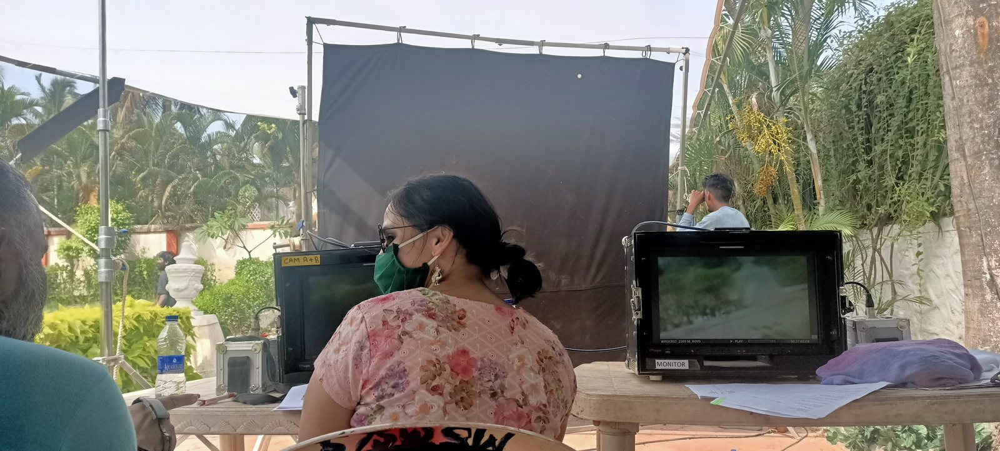
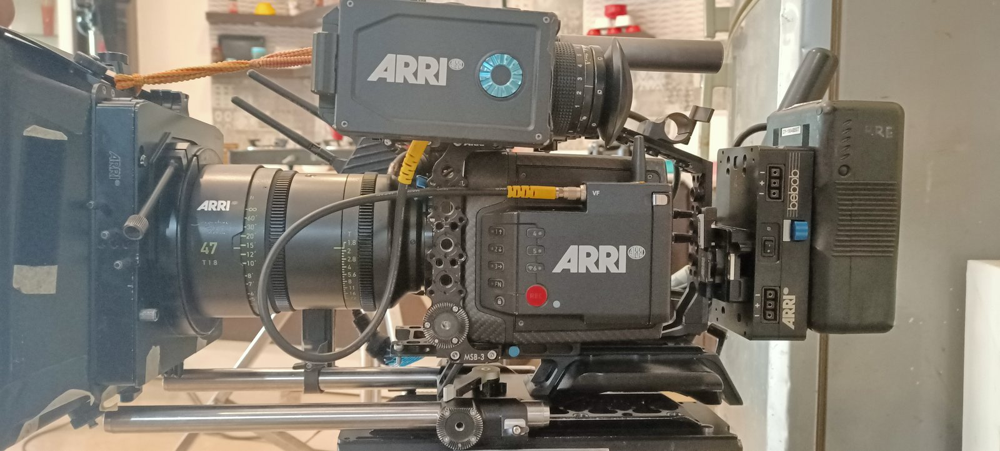
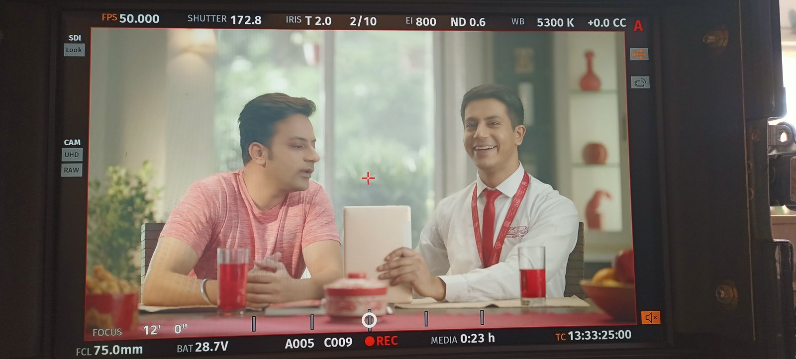
On set: the video village, the Alexa Mini LF wearing a 47mm Signature prime, and a take on the monitor.
03Storytel · the launch films
Storytel is a global audiobook platform, and we were brought in on its launch plan. One idea ran through the core of the campaign: start on a tight frame and, in a single unbroken take, slowly reveal what someone was really listening to. From there the campaign opened up into a set of small, self-contained stories about where a good audiobook actually fits into a day.
A child, a story. She listens the way she would to her mother, and the camera pulls back to reveal she is finding that same comfort in an audiobook. One take. I built the set in my own living room and made the thunderstorm and rain with lighting and sound design. Blackmagic.
A family on a beach. One take that opens wide and pushes slowly into their faces to show how far inside the story they are. The sand and the beach were built in a backyard, and the top-down angle took some creative rigging. Blackmagic.
Killing time, well. This one steps off the single-take idea. A man listens to an audiobook and goes kayaking through the backwaters of Kerala. Blackmagic.
A cab ride in Kochi. The passenger's audiobook amuses the driver, who is sure something this good must be expensive. It is not. A small, warm story about listening alone while you travel. Blackmagic.
The thriller in the car. A passenger plays a thriller over the car speakers and the driver gets pulled right in, until the stop arrives and he switches it off before the reveal. Now hooked, the driver asks how it ends. On a tight budget we rented the best cinema camera we could, an ARRI Alexa SXT, and spent nothing on light: no lamps at all, only reflectors, with a four-person crew. Hindi and Marathi.
A Diwali film. A bored family is visited by Hanuman, who narrates the whole Ramayana, until we reveal it was an audiobook that immersive. Shot in Mumbai on a Sony FS7.
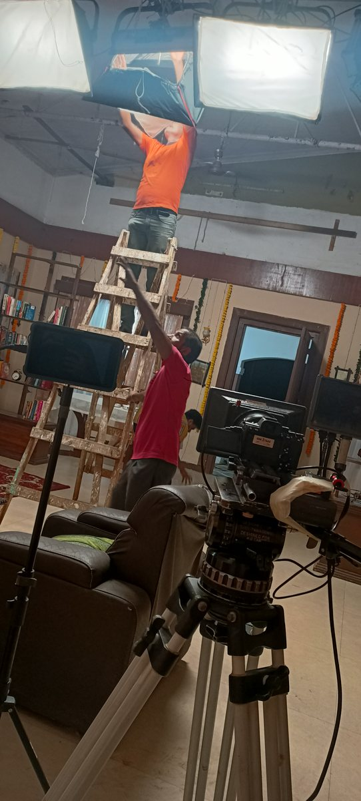
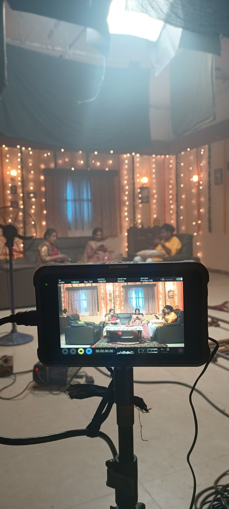
Dressing and lighting the Diwali set: soft light rigged overhead, and the family framed on the monitor.
04Porsche · Onam
An Onam campaign for Porsche, made on a deliberately limited budget and crew. We rented a warehouse and built the set inside it, and brought in traditional Kalari martial artists to draw a comparison between their strength and agility and the 911 Carrera's. Shot on a Sony A7S III.
05Raymond · Made to Measure
One of the first digital campaigns we shot for Raymond's Made to Measure line, across Bangalore and Delhi over two days. The main event was a photoshoot run by their in-house artist, so my film had to be caught in the gaps: between wardrobe changes I would take the model, find a location, grab the shots, and cut it all into one piece. Shot on a Sony FS7.
06UrbanCart
UrbanCart is a furniture brand, traditional pieces built for modern homes. The film had one job: show how easy the furniture is to assemble, easy enough that even a grandfather does it without help. Shot on a Sony A7S III with effectively zero budget.
07Al Rashed Shipping · Kuwait
A corporate film for Al Rashed Shipping in Kuwait. A four-person crew flew out, and I spent the first stretch studying how the company actually operated and who its people were, then built a narrative out of that. We shot over seven days across several locations, including the Kuwait port and other major hubs, using multiple camera setups. We also brought on a local drone operator to capture aerials within the country's flight laws and restrictions.
08Hilton Qatar · vertical social
Short vertical films I shot and edited for Hilton Qatar's restaurants and bars, cut for social feeds. Here they are, full and unlabeled.
09Awards & recognition
Fifteen-plus national and international awards. Two I keep coming back to:
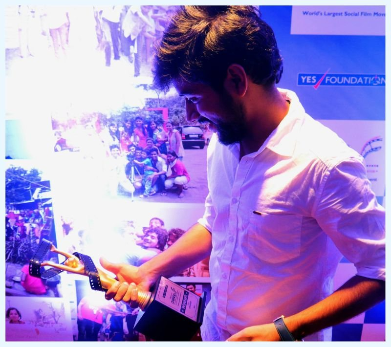
National Winner · YES Bank Filmmaking Challenge
A nationwide challenge that recognizes creative work under pressure: write, shoot, edit, and submit a short film on a given theme, all within 101 hours. Out of more than 200,000 submissions, I was selected as the national winner, for storytelling and execution under an intense time constraint.
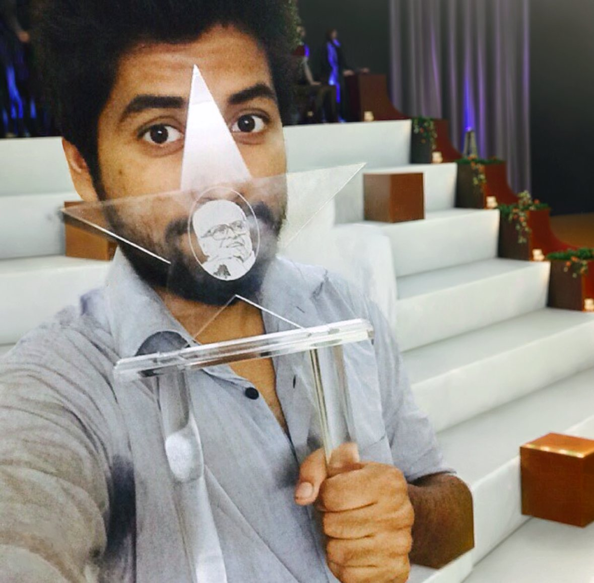
K Balachander Award · Best Directorial Talent
Established in honor of the legendary filmmaker K. Balachander to celebrate emerging directors with vision, originality, and strong narrative craft. I received it in August 2015, in the award's inaugural edition, the first of its kind named for one of Indian cinema's most influential figures.
"Ashwin Thomas Paul is the only director who has two of his films shortlisted in our Top 20."
Jamuura · film festival movement, 10 lakh+ entriesSelected as one of the top 10 short filmmakers across India, Pakistan, Sri Lanka, and Bangladesh.
Beta Movement · South Asia10Behind the scenes
Sets, monitors, jibs, and the crews who make it happen.
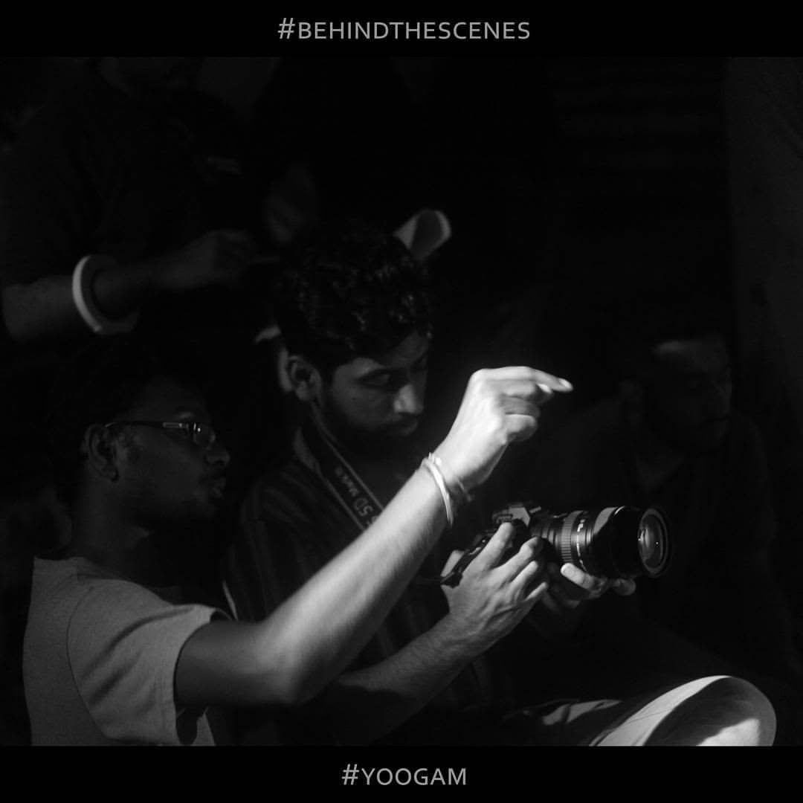
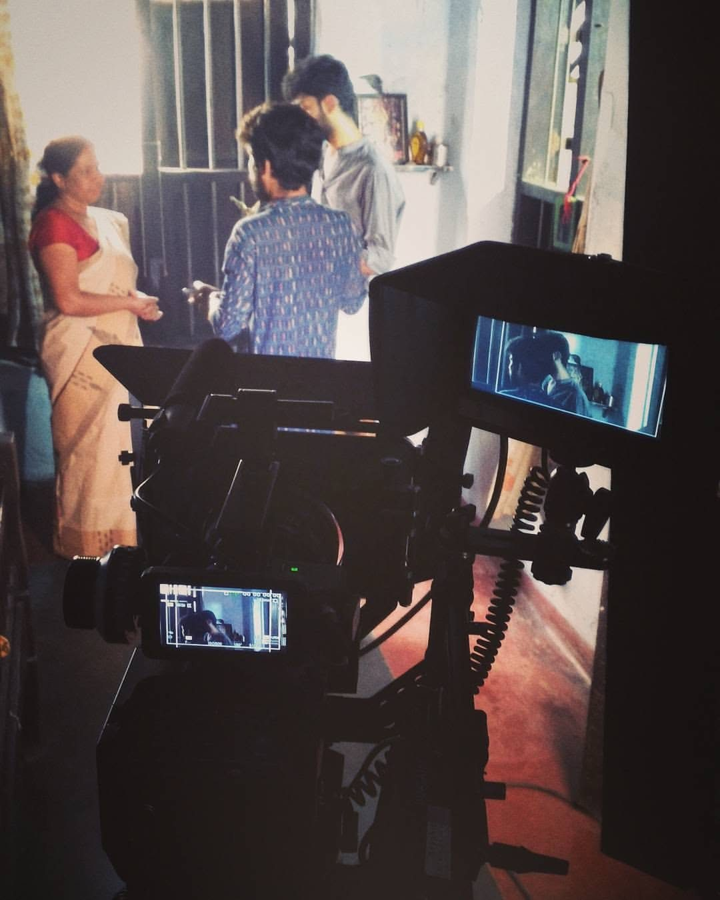
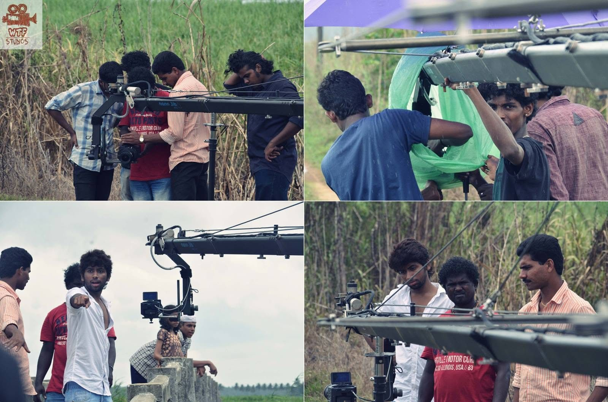
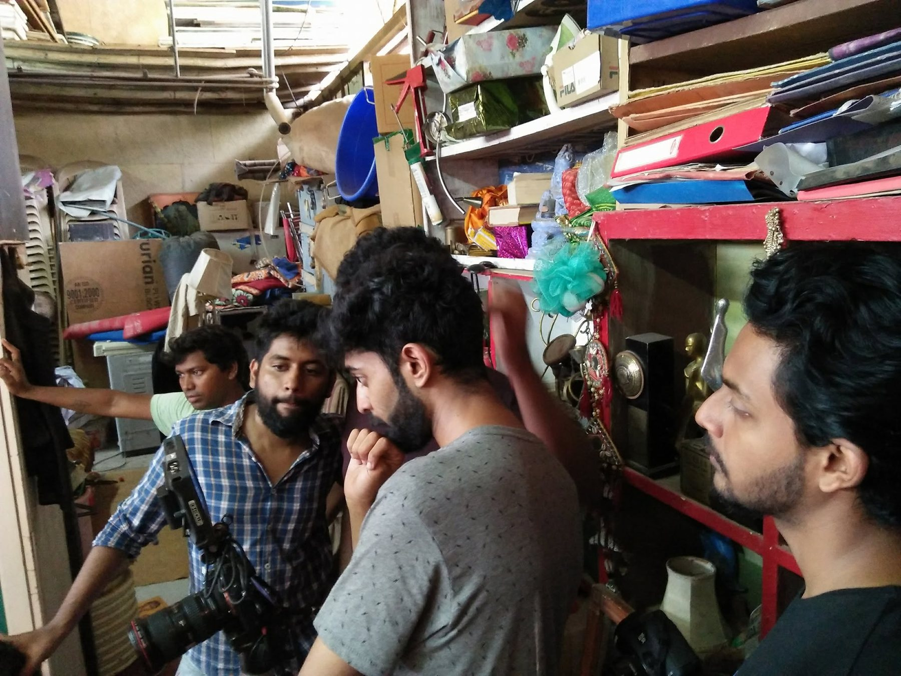
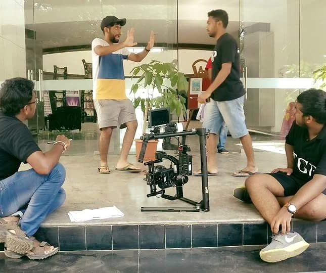
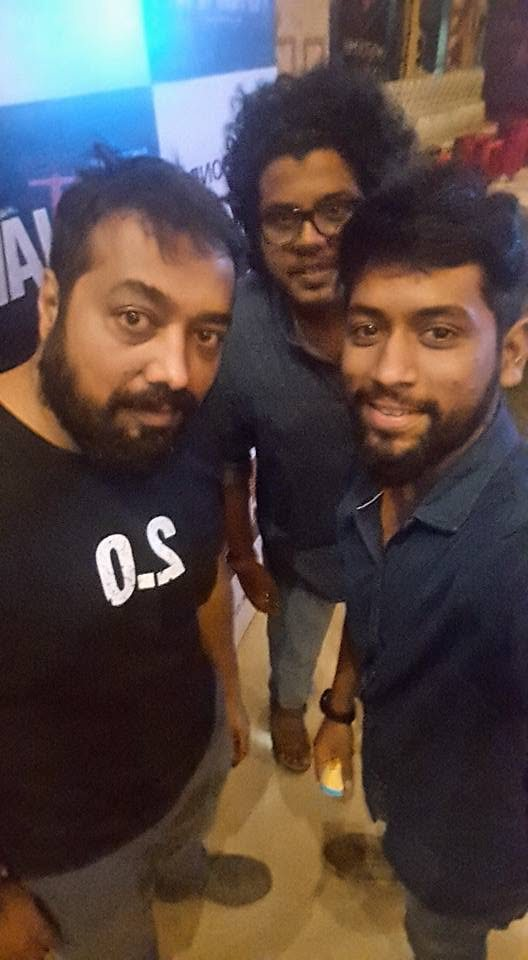
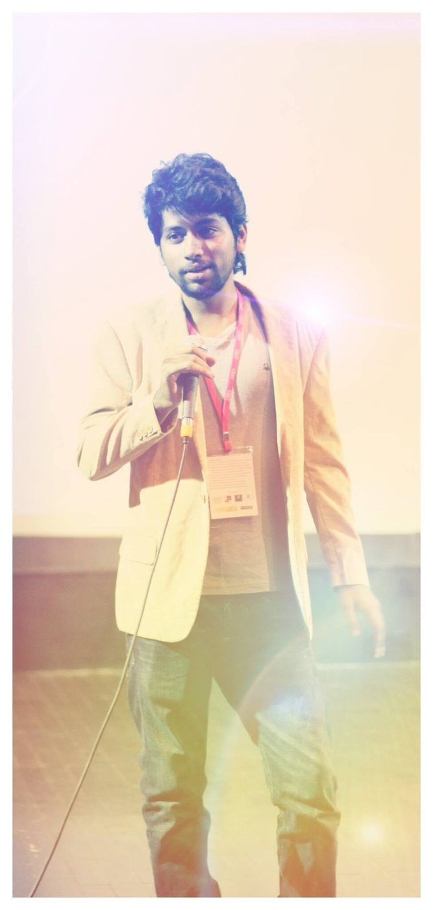
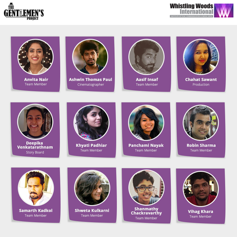